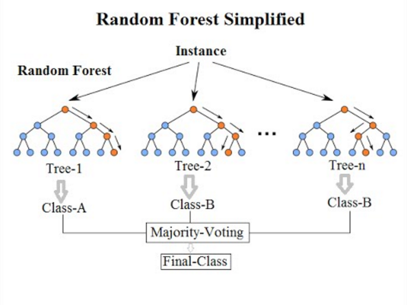

Duomenų modeliavimas I
lekt. Šarūnas Kasnauskas, 2018Duomenų tyryba (DT)
Įdomių struktūrų (modelių, ryšių, statistinių modelių, šablonų) radimas duomenų bazėse.
Didelių duomenų kiekių tyrinėjimas ir analizė automatizuotu arba pusiau automatizuotu būdu, siekiant rasti naudingus modelius (angl. patterns) ir taisykles.
Mašininis mokymasis (MM)
Dirbtinio intelekto sritis, kuri apima metodų kūrimą, mokančių kompiuterius „mąstyti“.
Kompiuterio programą galima laikyti besimokančia iš patirties E (Experience) su tam tikrų užduočių aibe T (Task) ir vertinimo rodikliu P (Performance), jeigu užduoties T atlikimas, matuojant P, tobulėja su patirtimi E.
MM tipai
Prižiūrimas mokymas (Supervised learning)
Neprižiūrimas mokymas (Unsupervised learning)
Mokymasis su pastiprinimu (Reinforcement learning)

DT? MM?

Kam to reikia verslui?
- Renkami ir talpinami didžiuliai kiekiai duomenų
- Pigūs skaičiavimų pajėgumai
- Konkurencinis spaudimas
Klasifikavimas
Klasifikavimas
Klasės atributo nustatymo modelis, remiantis kitų atributų reikšmėmis

Atributų pavyzdžiai
| Užduotis | Atributų rinkinys | Klasė |
|---|---|---|
| Elektroninių laiškų kategorizavimas | Požymiai surinkti iš antraštės ir turinio | Spamas ar ne |
| Auglio ląstelių identifikavimas | Požymiai surinkti MRI metu | Piktybinės ląstelės ar ne |
| Visatų kategorizavimas | Požymiai surinkti iš teleskopo vaizdų | Elipsinė, spiralinė ar netaisyklingoji galaktika |

Kaip pasirinkti geriausią skaidymą?
Geriausio padalijimo paieškos principas
Atšakos su tyriausiu klasės padalinimu tinkamiausios
Tam reikalingas tyrumo pamatavimas
Gini indeksas
Vienas iš daugėlio tyrumo matavimų
Klasifikavimo metodai
- Sprendimų medžiai
- k kaimynų klasifikavimas (K nearest-neighbours)
- Neuroniniai tinklai
- Naivaus Bajeso klasifikavimas (Naïve Bayes)
- Atraminių vektorių klasifikavimas (Support vector machines)
- Sudėtiniai klasifikatoriai: Sprendimų miškai
- ...
k Nearest-neighbours

Random forest
Klasifikavimo taikymas: sukčiavimo aptikimas
Tiklas: nuspėti nesąžiningas kreditinių kortelių transakcijas
Metodas:
- Naudoti transakcijas ir sąskaitos savininko informaciją kaip atributus: ką, kada klientas perka, kaip dažnai susimoka laiku ir t.t.
- Sužymėti praeities transakcijas kaip nesąžiningas ar sąžiningas - klasės atributas
- Apmokyti modelį transkacijų klasei nustatyti
- Naudoti modelį nesąžiningų transakcijų sąskaitoje aptikimui
Klasifikavimo taikymas: mobilaus ryšio klientų netekimas
Tiklas: nuspėti ar klientas bus prarastas konkurentams
Metodas:
- Naudoti kiekvieno buvusio ir dabartinio kliento transakcijų įrašus atributų paieškai: kaip dažnai, kokiu paros metu ir kur skambina, jo finansinis, vedybinis statusas
- Sužymėti klientus kaip lojalius arba ne
- Apmokyti modelį lojalumui nustatyti
- Imtis veiksmų klientams išlaikyti
Klasterizavimas
Klasterizavimas
Objektų grupavimas tokiu būdu, kad objektai vienoje grupėje būtų panašūs, bet nepanašūs į objektus kitose grupėse
Klaterizavimo tipai: hierarchinis, particinis
Particinis
Hierarchinis
K-means
>K-means
- Particinis klasterizavimo būdas
- Klasterių kiekis turi būti specifikuotas iš anskto
- Kiekvienas klasteris susietas su centru
- Kiekvienas taškas priskiriamas artimiausiam centrui
- Iteraciniu būdu centrų lokacijos pakeičiamos
- Taškai perskirstomi
K-means
>K-means vertinimas
Paklaidų kvardatų suma (Sum of Squared Errors)
Klasterizavimo taikymas: rinkos segmentavimas
Tiklas: padalinti rinką į skirtingų klientų grupes tikslinės rinkodaros tiklais
Metodas:
- Surinkti skirtingus atributus apie klientus pagal jų geografinę lokaciją, įpročius
- Surasti panašių klientų klasterius
- Išmatuoti klasterizavimo kokybę remiantis to paties klasterio klientų elgsena lyginant su kitais kalsteriais
- Taikyti tikslinę rinkodarą skirtingiems klasteriams
Klasterizavimo taikymas: dokumentų klasterizavimass
Tiklas: surasti panašių dokumentų grupes pagal juose naudojamus terminus
Metodas:
- Identifikuoti dažnai vartojamus terminus kiekviename dokumente
- Suformulutoi panašumo matmenį remiantis skirtingų terminų panašumu
- Naudoti tai klasteriams kurti
Asociatyvinės taisyklės
Asociatyvinės taisyklės
Turint tam tikrą kiekį transakcijų savyje turinčių objektų aibes, priklausomybės taisyklių atradimas, kurios prognozuos vienų objektų pasitaikymą remiantis kitų objektų buvimu


Apibrėžimai
Rinkinys - vieno ar kelių objektų kolekcija ({Pienas, Duona, Vystiklai)
Palaikymas - procentinė dalis transakcijų, kurioms priklauso konkretus rinkinys ({Pienas, Duona, Vystiklai} = 40%)
Dažnas rinkinys - rinkinys, kurio palaikymas didesnis už minimalią palaikymo ribą
Asociatyvinė taisyklė - X -> Y
Stiprumas - transakcijų, kuriose pasitvirtina tam tikra taisyklė X -> Y santykis su transakcijomis, kuriose buvo X (kairioji pusė)
Asociatyvinių taisyklių tikslas
Duotam transakcijų sąrašui, rasti visas taisykles, kurių rinkiniai yra dažni (palaikymas didesnis už minimalų palaikymą (minsupp)) ir taisyklės yra stiprios (stiprumas didesnis už minimalų stiprumą (minconf))
Taisyklių pavyzdžiai:
- {Pienas, Vystyklai} -> {Alus} (p=0.4, s=0.67)
- {Pienas, Alus} -> {Vystyklai} (p=0.4, s=1.0)
- {Vystyklai, Alus} -> {Pienas} (p=0.4, s=0.67)
- {Alus} -> {Pienas, Vystyklai} (p=0.4, s=0.67)
Apriori algoritmas
Principas - jei rinkinys yra dažnas, tuomet ir visi jo subrinkiniai yra dažni
Taisyklių generavimas
Dažnų rinkinių skaidymas į taisykles kandidates
Taisyklės vertinamos pagal stiprumą
Didėjant iš to paties rinkinio sudarytų taisyklių objektų kiekiui dešinėje - taisyklių stiprumas gali tik mažėti
Asociatyvinių taisyklių taikymas
Prekių krepšelio analizė - taisyklės akcijoms, lentynų išdėstymui, sandėlio valdymui
Finansinės paslaugos - vienas klientas (jo bankinės transkacijos) kaip viena transakcija pasiūlymams, rekomendacijoms
Medicininė informatika - pacientų simptomų ir testų rezultatų sąsaja su tam tikromis ligomis